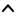

| Top |  |
| ShellWM * | shell_wm_new () |
| void | shell_wm_completed_minimize () |
| void | shell_wm_completed_unminimize () |
| void | shell_wm_completed_size_change () |
| void | shell_wm_completed_map () |
| void | shell_wm_completed_destroy () |
| void | shell_wm_completed_switch_workspace () |
| void | shell_wm_complete_display_change () |
| void | confirm-display-change | Run Last |
| void | destroy | Run Last |
| gboolean | filter-keybinding | Run Last |
| void | hide-tile-preview | Run Last |
| void | kill-switch-workspace | Run Last |
| void | kill-window-effects | Run Last |
| void | map | Run Last |
| void | minimize | Run Last |
| void | show-tile-preview | Run Last |
| void | show-window-menu | Run Last |
| void | size-change | Run Last |
| void | switch-workspace | Run Last |
| void | unminimize | Run Last |
ShellWM *
shell_wm_new (MetaPlugin *plugin);
Creates a new window management interface by hooking into plugin
.
void shell_wm_completed_minimize (ShellWM *wm,MetaWindowActor *actor);
The plugin must call this when it has completed a window minimize effect.
void shell_wm_completed_unminimize (ShellWM *wm,MetaWindowActor *actor);
The plugin must call this when it has completed a window unminimize effect.
void shell_wm_completed_size_change (ShellWM *wm,MetaWindowActor *actor);
void shell_wm_completed_map (ShellWM *wm,MetaWindowActor *actor);
The plugin must call this when it has completed a window map effect.
void shell_wm_completed_destroy (ShellWM *wm,MetaWindowActor *actor);
The plugin must call this when it has completed a window destroy effect.
void
shell_wm_completed_switch_workspace (ShellWM *wm);
The plugin must call this when it has finished switching the workspace.
void shell_wm_complete_display_change (ShellWM *wm,gboolean ok);
The plugin must call this after the user responded to the confirmation dialog.
“confirm-display-change” signalvoid user_function (ShellWM *shellwm, gpointer user_data)
Flags: Run Last
“destroy” signalvoid user_function (ShellWM *shellwm, MetaWindowActor *arg1, gpointer user_data)
Flags: Run Last
“filter-keybinding” signalgboolean user_function (ShellWM *shellwm, MetaKeyBinding *arg1, gpointer user_data)
Flags: Run Last
“hide-tile-preview” signalvoid user_function (ShellWM *shellwm, gpointer user_data)
Flags: Run Last
“kill-switch-workspace” signalvoid user_function (ShellWM *shellwm, gpointer user_data)
Flags: Run Last
“kill-window-effects” signalvoid user_function (ShellWM *shellwm, MetaWindowActor *arg1, gpointer user_data)
Flags: Run Last
“map” signalvoid user_function (ShellWM *shellwm, MetaWindowActor *arg1, gpointer user_data)
Flags: Run Last
“minimize” signalvoid user_function (ShellWM *shellwm, MetaWindowActor *arg1, gpointer user_data)
Flags: Run Last
“show-tile-preview” signalvoid user_function (ShellWM *shellwm, MetaWindow *arg1, MetaRectangle *arg2, gint arg3, gpointer user_data)
Flags: Run Last
“show-window-menu” signalvoid user_function (ShellWM *shellwm, MetaWindow *arg1, gint arg2, MetaRectangle *arg3, gpointer user_data)
Flags: Run Last
“size-change” signalvoid user_function (ShellWM *shellwm, MetaWindowActor *arg1, MetaSizeChange arg2, MetaRectangle *arg3, MetaRectangle *arg4, gpointer user_data)
Flags: Run Last
“switch-workspace” signalvoid user_function (ShellWM *shellwm, gint arg1, gint arg2, gint arg3, gpointer user_data)
Flags: Run Last
“unminimize” signalvoid user_function (ShellWM *shellwm, MetaWindowActor *arg1, gpointer user_data)
Flags: Run Last